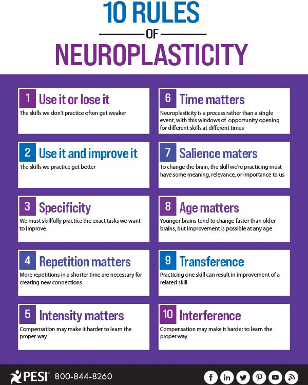
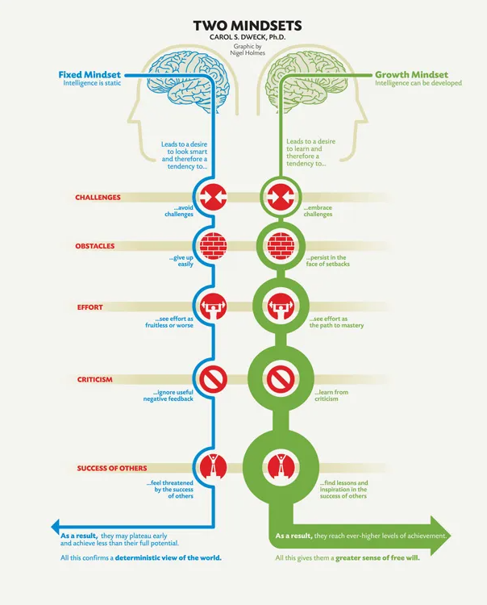

The Principles of Neuroplasticity
Neuroplasticity is the ability of our brain to 'rewire itself', to form and reorganize synaptic connections in response to learning, behavior and experience. This can be particular helpful for people who are recovering from a stroke or an injury but the principles of neuroplasticity can benefit everyone.
One example of this neuroplasticity at work comes from a Harvard study by Sarah Lazar that showed that meditation can increased gray matter in the brain after just 8 weeks of mediation practice compared to the control group. So how can this benefit you? Its well-documented that the cortex shrinks as we age but Lazar found that in the prefrontal cortex 50-year-old meditators had the same amount of gray matter as 25-year-olds! You can literally change and reshape your brain- not just functionally but physically.
Knowing that we have the ability to reshape and rewire our brains is really exciting. Using the principles of neuroplasticity we can make repeated, intentional, sometimes difficult efforts to make lasting change.There are ten 10 principles of neuroplasticity that were outlined by Kleim and Jones. You can see those principles below in an infographic from PESI
How to Increase your Neuroplasticity
- Travel
- Getting enough sleep
- Meditation
- Study a new language
- Learn to play an instrument
- Exercise
What is Growth Mindset
Growth mindset is the belief that intelligence and personality can be developed rather than fixed traits- that while everyone might differ in their talents or interests or aptitude that everyone can grow and change through application and experience. After decades of research into the topic of motivation, peronsonality and brain development Carol Dwek built upon the principles of neuroplasticity in her book Mindset.
"In a growth mindset students understand that their talents and abilities can be developed through effort, good teaching and persistence. They don’t necessarily think everyone’s the same or anyone can be Einstein, but they believe everyone can get smarter if they work at it"
- Carol Dewek
Growth Mindset and my Learning Journey
During my exploration of growth mindset an idea that really stuck out to me is that a growth mindset you aren't discouraged by failure, because you aren't failing, you're learning. To quote Carol Dwek again, "The passion for stretching yourself and sticking to it, even (or especially) when it’s not going well, is the hallmark of the growth mindset. This is the mindset that allows people to thrive during some of the most challenging times in their lives"
. As I am about to dive even deeper into Dev Academy during bootcamp this idea is one that I will hold onto.
How will a growth mindset influence my learning plan? Growth mindset creates a passion for learning rather than a hunger for approval. I don't want to just apply a growth mindset to my learning- I want to apply it to my life. To cultivate better relatioships, health and confidence, as well as life long learning. I want to get rid of those limiting beliefs like "I'm not a morning person" or "I'm really messy". I've already noticed times while learning difficult concepts where I've though 'I just don't get it!!' now on I'm going to frame this as 'I just don't get this YET!'. I know that those areas where its just a little too hard is when my brains capacity to solve problems is growing.
Resources
- Watch Carol Dwek's Ted Talk
- Positive Psychology- What is Neuroplasticity?
- James Clear, the Author of Atomic Habits has some excellent growth mindset content on his website and in his book